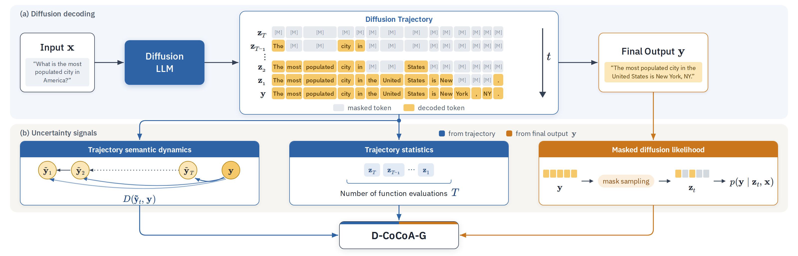

Fast inference and reliable hallucination detection — at the same time
Large Language Diffusion Models (LLDMs) are emerging as an alternative to autoregressive models, offering faster inference through higher parallelism. Similar to autoregressive LLMs, they remain prone to hallucinations, making reliable uncertainty quantification (UQ) crucial for safe deployment. However, existing UQ methods are fundamentally misaligned with this new paradigm: they assume autoregressive factorization or use expensive repeated sampling, negating the efficiency of LLDMs.
In this work, we present the first systematic study of UQ for LLDMs and propose lightweight, zero-shot uncertainty signals derived from the iterative denoising process, leveraging intermediate generations, token remasking dynamics, and denoising complexity. We further adapt a state-of-the-art UQ method to LLDMs by combining masked diffusion likelihoods with trajectory-based semantic dissimilarity. We prove that expected trajectory dissimilarity lower bounds the masked diffusion training objective, which motivates its usage as an uncertainty score. Comprehensive experiments across three tasks, eight datasets, and four models show that our method achieves a great cost-performance trade-off: it approaches the strongest sampling-based baselines while incurring up to 100x lower computational overhead. Our work demonstrates that LLDMs can deliver both fast inference and reliable hallucination detection simultaneously.
Why standard UQ breaks for diffusion LLMs
No left-to-right likelihood
LLDMs don't factorize \(p(y_l\mid y_{<l},x)\), and their token probabilities come from a lower-bound objective. Information-based scores such as MSP or perplexity typically perform only marginally better than random.
Sampling kills the speed-up
Consistency methods (Semantic Entropy, KLE, CoCoA) need many full generations — a multiplicative cost that erases the main reason to use a diffusion LLM.
The trajectory is free
Denoising already produces intermediate states \(z_T,\dots,z_1\). Their dissimilarity to the final output is a strong uncertainty signal at almost no additional cost.
D-CoCoA: CoCoA, rebuilt for diffusion
We replace CoCoA's likelihood term with a diffusion-aware surrogate and its sampled generations with the intermediate states the model already produces while denoising.

D-CoCoA-G combines three diffusion-specific signals: (1) trajectory semantic instability, measuring semantic dissimilarity \(D(\tilde{y}_t, y)\) between argmax-decoded intermediate states and the final output; (2) trajectory statistics, capturing generation complexity through the number of function evaluations; and (3) masked diffusion likelihood, approximating the conditional log-likelihood.
Average dissimilarity (AD)
How far each argmax-decoded intermediate state \(\tilde{y}_t\) is from the final answer \(y\), measured with a cross-encoder.
NFE, remasking, flips
How many forward passes were needed, how many tokens were remasked, and how often the top-1 prediction changed.
MCNLL & CommitNLL
A Monte Carlo masked-diffusion NLL, or the confidence of each token at the exact step it was committed.
Trajectory dissimilarity
The progressive variant assigns greater importance to dissimilarities at earlier steps: if the denoising trajectory is already close to the final output within the first few steps, the model stabilizes quickly, indicating low uncertainty.
Two versions of D-CoCoA
Confidence at commitment × per-block trajectory dissimilarity. Needs nothing beyond the generation pass (plus a RoBERTa cross-encoder).
Sequence-level MC likelihood × full-trajectory dissimilarity, scaled by denoising complexity.
Streaming (demo only, not evaluated in the paper). Both terms of D-CoCoA-L are built from quantities produced during denoising, so the demo above keeps a running score with the current draft in place of the final output; it equals D-CoCoA-L exactly once generation finishes.
Theorem 1 · Expected Trajectory Dissimilarity as a Lower Bound on the Masking Loss
Assume the model is perfectly calibrated (Fisher consistency), \(p_\theta(y\mid z_t,x)=p_{\text{data}}(y\mid z_t,x)\), and \(D(\tilde{y}_t,y)=\mathbb{1}[\tilde{y}_t\not\equiv y]\), then $$\mathbb{E}_{(x,y)\sim p_{\text{data}}}\big[u_{\mathrm{AD}}(x,y)\big]\;\le\;\mathcal{L}(\theta).$$ Consequently, a high value of \(u_{\mathrm{AD}}\) indicates a high expected prediction error and suggests that the generation is likely to contain hallucinations.
Near sampling-based quality at a fraction of the cost
Selective generation quality is measured with the Prediction Rejection Ratio (PRR ↑, rejection up to 50%). Overhead is extra runtime beyond generation, including auxiliary models.

Figure 2 of the paper: UQ performance (PRR↑) versus computational overhead (runtime in seconds↓) averaged across all datasets — (a) LLaDA-1.5, (b) Dream, (c) ReFusion, (d) DiffusionGemma. For DiffusionGemma, D-CoCoA-G uses CommitNLL instead of MCNLL.
PRR ↑ per dataset
Best method from each category (Tables 6, 11, 16 and 20 in the paper). Purple = best in column. Overhead = average runtime overhead per instance across the eight datasets (as in Fig. 2), relative to D-CoCoA-L. DiffusionGemma has no mask token, so MCNLL-based methods are not applicable and D-CoCoA-G uses CommitNLL instead; TAD produces no score on its single-token MMLU answers.
AR-era logit scores fail
MSP, perplexity and similar scores are near random for LLDMs; use a diffusion-aware likelihood such as MCNLL instead.
Intermediate states replace sampling
Comparing each denoising state with the final output beats pairwise similarity among states.
Fast and reliable
D-CoCoA-L requires roughly one hundred times less additional computation time than the strongest sampling-based methods, such as CoCoA-MCNLL and KLE, which typically provide only modest additional gains (e.g. 2.3% for LLaDA).
BibTeX
@article{vazhentsev2026uncertainty,
title = {Uncertainty Quantification for Large Language Diffusion Models},
author = {Vazhentsev, Artem and Smirnov, Vladislav and Li, David and
Panov, Maxim and Baldwin, Timothy and Shelmanov, Artem},
journal = {arXiv preprint arXiv:2605.14570},
year = {2026}
}